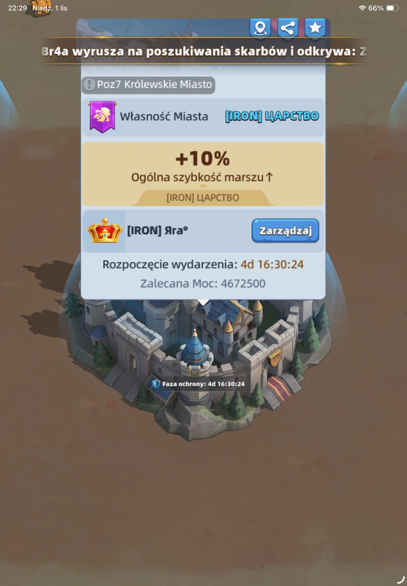
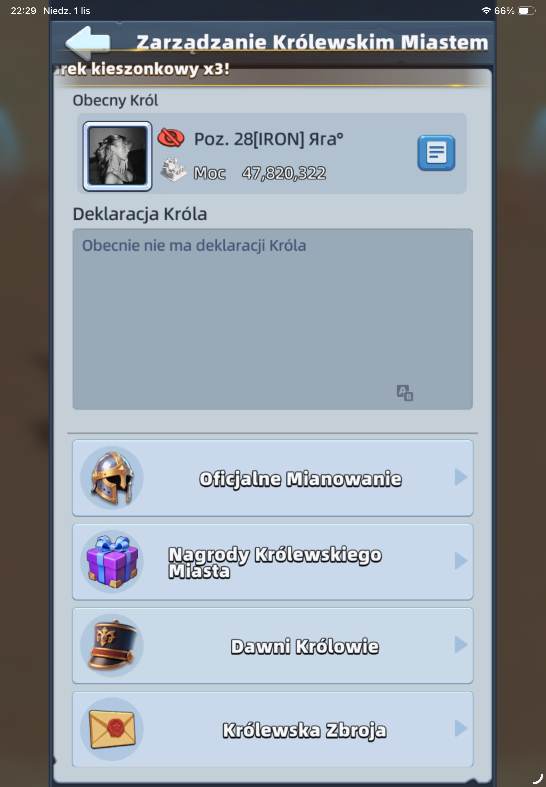
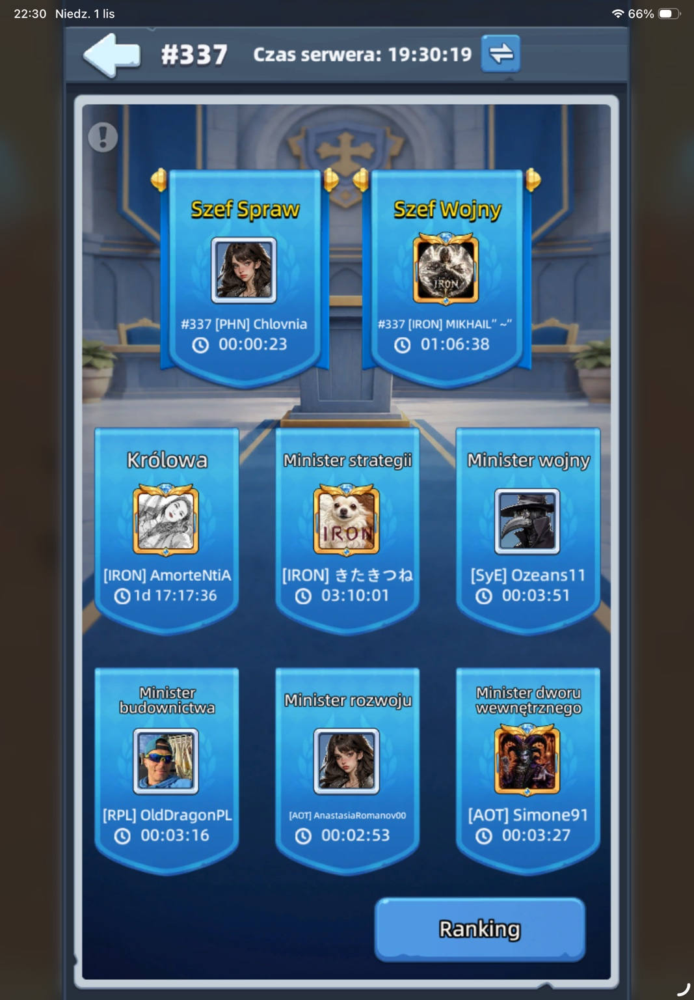
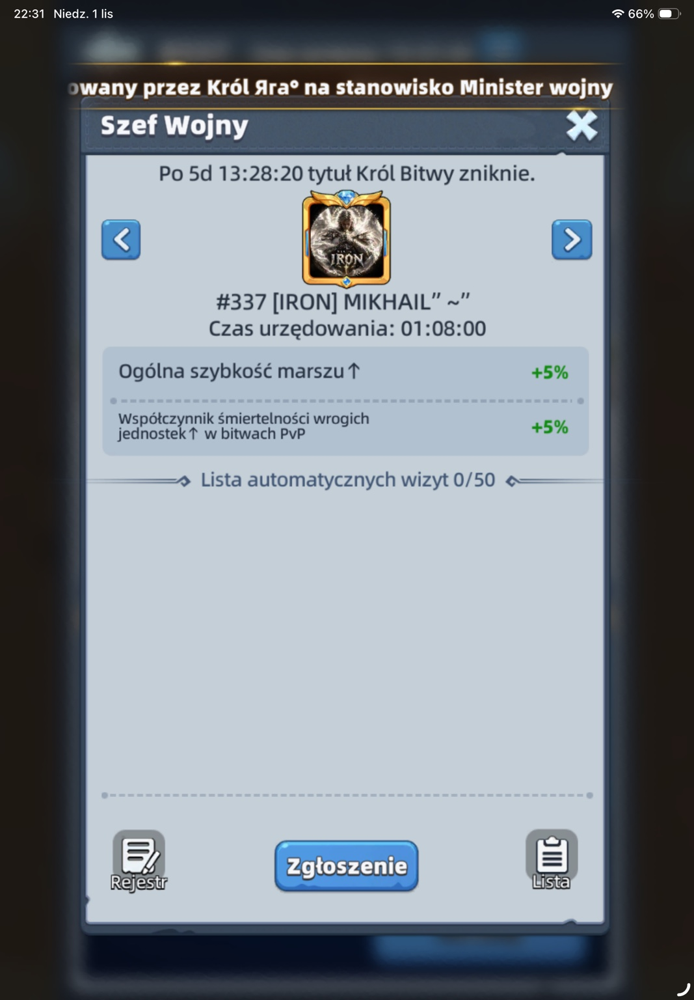

Jak zgłosić się na ministra, kiedy dostaniesz premię, jak działa pięciominutowa kolejka oraz czym różnią się bonusy standardowe od wzmocnionych po wygranym KvK.
01 / Jak aplikować — 4 kroki
Oryginalne zrzuty ekranu z gry, w kolejności wykonywania czynności.

KROK 1
Zarządzaj
Na mapie wybierz Królewskie Miasto i naciśnij „Zarządzaj”.

KROK 2
Oficjalne Mianowanie
Otwórz zakładkę „Oficjalne Mianowanie”.

KROK 3
Wybierz stanowisko
Wybierz ministra, którego bonus pasuje do Twojego celu.

KROK 4
Zgłoszenie
Naciśnij „Zgłoszenie”. Nie pojawia się formularz — trafiasz na listę oczekujących.
Uwaga: samo zgłoszenie nie daje bonusu. Premia działa dopiero po objęciu stanowiska. Wymagany poziom Sanktuarium według społecznościowej wiki: 16.
02 / Kolejka i automatyczna rotacja
5 minut
Przy aktywnej kolejce minister zmienia się automatycznie co 5 minut.
30 minut
Po kadencji obowiązuje blokada ponownego zgłoszenia na to samo stanowisko.
Do 50 zgłoszeń
Lista automatycznych wizyt ma limit 50 miejsc.
Pusta kolejka
Jeżeli nikt nie czeka, aktualny minister zachowuje stanowisko i jego kadencja się przedłuża.
03 / Premie wszystkich stanowisk
Wartości według społecznościowej wiki. Wersja „po KvK” dotyczy statusu Króla Bitwy, a nie każdej wygranej obrony. Przed wydaniem zasobów sprawdź wartości w grze.
👑
Król
Standard
Zdrowie, atak i obrona bohaterów+5%
Po wygranym KvK
Specjalny tytułKról Bitwy
♛
Królowa
Standard
Budowa+20%
Badania+20%
Szkolenie+10%
Po wygranym KvK
Budowa+30%
Badania+30%
Szkolenie+15%
✚
Minister Strategii
Standard
Pojemność szpitala+20%
Szybkość leczenia+20%
Po wygranym KvK
Pojemność szpitala+30%
Szybkość leczenia+25%
⚔
Minister Wojny
Standard
Pojemność szkolenia+20%
Szybkość szkolenia+20%
Po wygranym KvK
Pojemność szkolenia+25%
Szybkość szkolenia+30%
▥
Minister Budownictwa
Standard
Szybkość budowy+50%
Szybkość badań+25%
Po wygranym KvK
Szybkość budowy+60%
Szybkość badań+35%
⌁
Minister Rozwoju
Standard
Szybkość badań+50%
Szybkość budowy+25%
Po wygranym KvK
Szybkość badań+60%
Szybkość budowy+35%
❖
Minister Dworu Wewnętrznego
Standard
Zboże+100%
Drewno+100%
Zioła+100%
Po wygranym KvK
Zboże+165%
Drewno+165%
Zioła+155%
♜
Król Bitwy
Standard
Stanowisko specjalne po KvK
Po wygranym KvK
Zdrowie, atak i obrona bohaterów+10%
Śmiertelność wroga PvP+5%
➤
Szef Wojny
Standard
Stanowisko specjalne po KvK
Po wygranym KvK
Szybkość marszu+5%
Śmiertelność wroga PvP+5%
✦
Szef Spraw
Standard
Stanowisko specjalne po KvK
Po wygranym KvK
Szybkość budowy+60%
Szybkość badań+60%
04 / Kalkulator oszczędności czasu
Porównaj czas zadania przy obecnym bonusie szybkości i po otrzymaniu stanowiska.
Uproszczony model: czas = czas bazowy / (1 + łączny bonus szybkości / 100). Premie szybkości są sumowane; nie odejmuje się procentu bezpośrednio od aktualnego czasu. Wynik orientacyjny — ostateczny czas weryfikuj w grze.
05 / Jak wycisnąć maksimum z ministra?
Budowa: przygotuj surowce i wymagania; obejmij stanowisko; dopiero wtedy rozpocznij najdłuższą rozbudowę.
Badania: wybierz Ministra Rozwoju albo Szefa Spraw; rozpocznij badanie w trakcie aktywnej premii.
Szkolenie: Minister Wojny jest szczególnie przydatny przy dużych partiach jednostek i przygotowaniach do wydarzeń.
Leczenie: Minister Strategii pomaga przy masowych stratach po PvP.
Produkcja: Minister Dworu Wewnętrznego zwiększa produkcję zasobów, nie dodaje jednorazowo zasobów do plecaka.
Nie marnuj okna: przygotuj wszystko przed zgłoszeniem; przy kolejce możesz mieć tylko 5 minut.
Nie przyspieszaj bez potrzeby: najważniejsze jest uruchomienie zadania podczas premii; przyspieszenia można wykorzystać później.
Najczęstszy błąd: rozpoczęcie budowy przed objęciem stanowiska. Premia do szybkości nowego zadania nie skraca automatycznie już rozpoczętego odliczania.
06 / Najczęstsze pytania
Czy po zgłoszeniu otwiera się dodatkowy formularz?
Nie. Zgłoszenie dodaje gracza do listy oczekujących.
Czy trzeba pisać do Króla?
Na serwerze 337 działa automatyczna kolejka. Nie trzeba prosić o każdą pięciominutową zmianę, o ile automatyczna rotacja jest aktywna.
Co, jeśli nikogo nie ma w kolejce?
Aktualny minister zachowuje stanowisko do kolejnej rotacji z oczekującym kandydatem.
Czy można zgłosić się ponownie natychmiast?
Nie. Obowiązuje 30-minutowa blokada ponownego zgłoszenia na to samo stanowisko.
Czy wygrana KvK zawsze daje te premie?
Wzmocnione wartości w tabeli dotyczą statusu Króla Bitwy, związanego ze zwycięstwem atakującego królestwa. Sprawdź aktywne stanowiska na swoim serwerze.
Gdzie sprawdzić, czy bonus działa?
W aktywnym stanowisku i w podglądzie czasu nowo uruchamianej czynności.